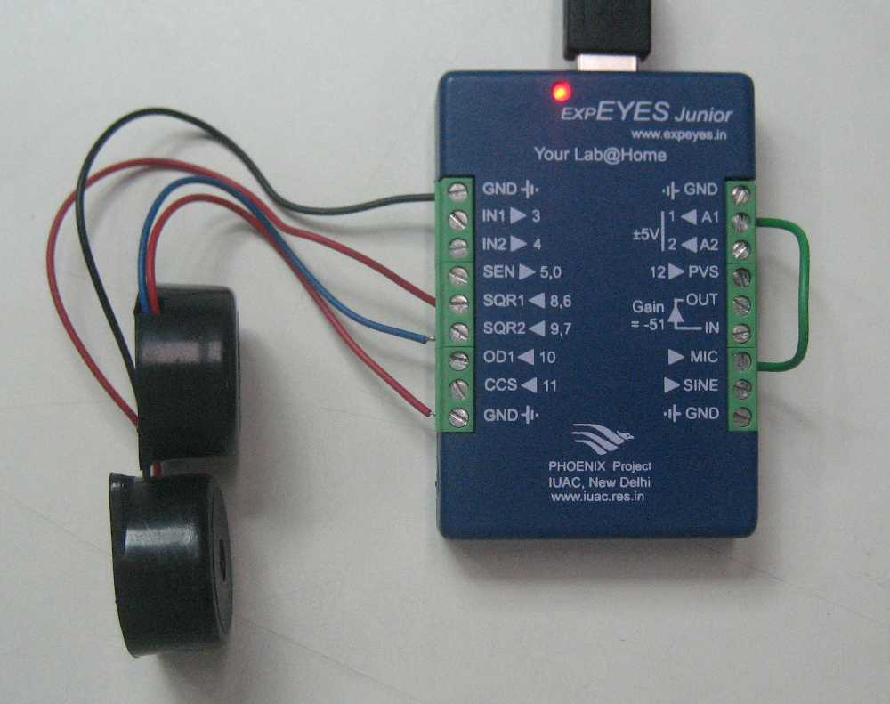

Two different frequencies are generated on SQR1 and SQR2 and both are connected to passive Piezo buzzers. The sound is captured by the built-in microphone and connected to A1 after amplification. The two sinusoids are added up to give an envelope. The frequency difference between the two sources in the beat frequency.
